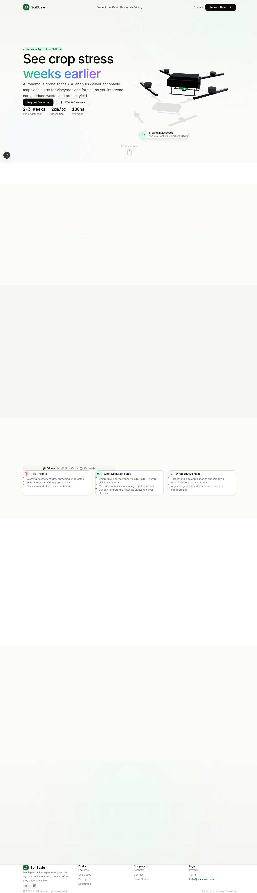

2026 · Client work
SoilScale
Multispectral crop intelligence — drones that spot disease before it is visible. The hero runs a real 3D drone rather than a stock photograph, because the product's whole claim is that the hardware sees something you can't.

Light, warm, technical
Agri-tech defaults to either a photo of a field at golden hour or a dark SaaS dashboard. This goes warm-neutral instead — near-white with a green that only appears where something is alive or actionable.
- Gradient on one line only. "weeks earlier" carries a green-to-violet gradient; the rest of the headline is flat black. It marks the claim without turning the page into a gradient.
- Monospace metrics. 2–3 weeks, 2cm/px, 100ha — set in mono directly under the CTAs, so the specifics sit next to the ask.
- Floating capability chip. A single card near the drone names the sensor stack (NDVI, NDRE, thermal, moisture) without a spec table.
- Amber as the second accent. Reserved for warnings and stress states, matching what the product actually reports.
Palette
#22C55E green
#F59E0B amber
#FAFAF9 warm white
#E7E5E4 stone

Client work — screenshots and write-up only. Captured from local source: the public deployment is an older build whose layout container and manifest no longer resolve, so it does not represent the current design.